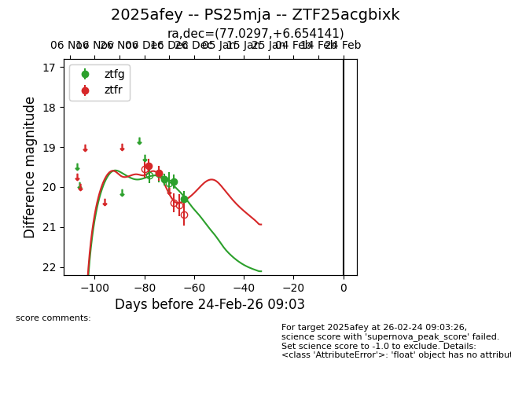
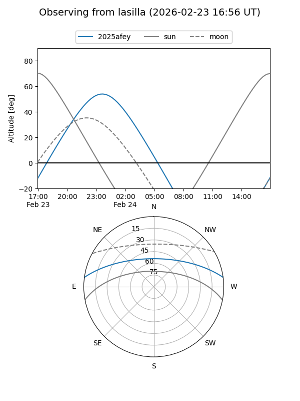
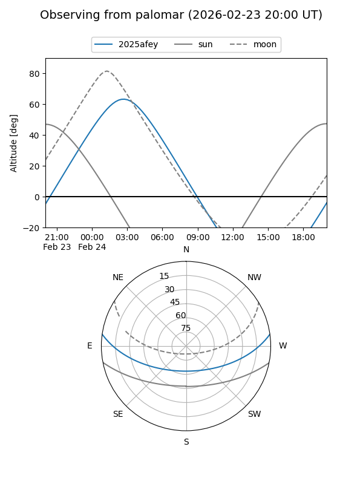
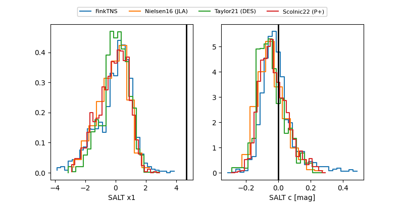

2025afey
Target 2025afey at 2025-12-24 16:17
Aliases and brokers:
FINK: fink-portal.org/ZTF25acgbixk
Lasair: lasair-ztf.lsst.ac.uk/objects/ZTF25acgbixk
ALeRCE: alerce.online/object/ZTF25acgbixk
TNS: wis-tns.org/object/2025afey
YSE: ziggy.ucolick.org/yse/transient_detail/2025afey
alt names
ZTF25acgbixk (ztf,fink_ztf)
2025afey (tns,yse)
Coordinates:
equatorial (ra, dec) = 77.0297,+6.65414
equatorial (HMS+DMS) = 05:08:07.13,+06:39:14.91
galactic (l, b) = (194.3557,-19.40948)
Flags:
Photometry:
last ztfg=20.30, ztfr=19.65
3 ztfg, 2 ztfr detections
Lightcurve

Visibility


Additional plots
